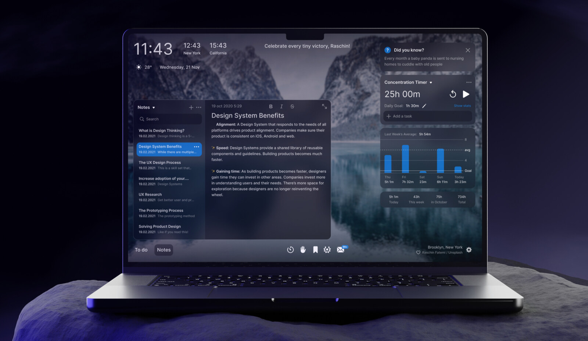
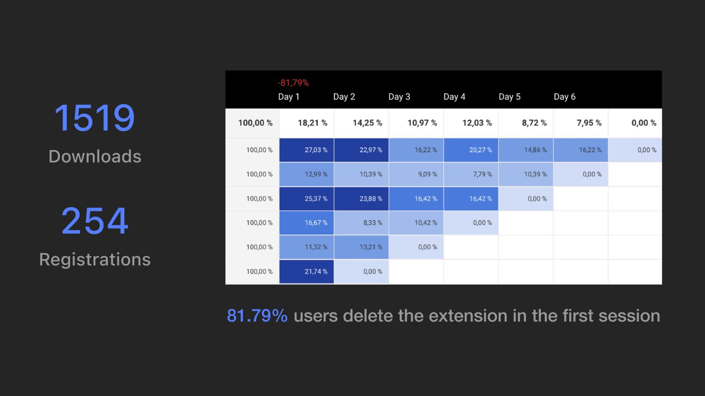
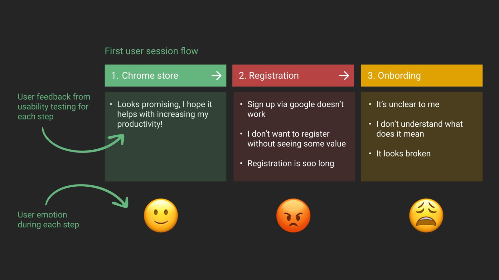
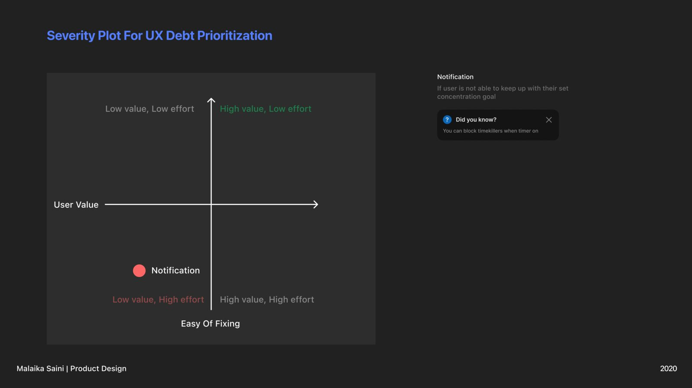
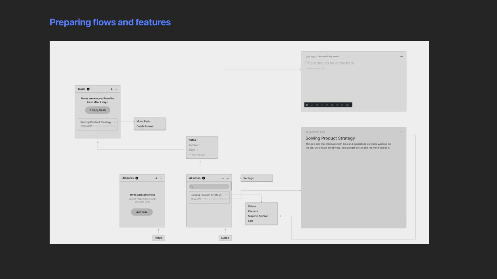
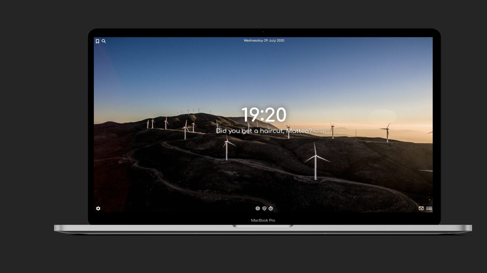
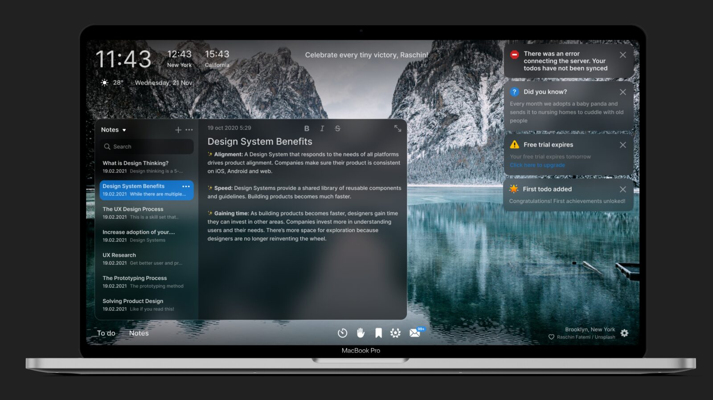
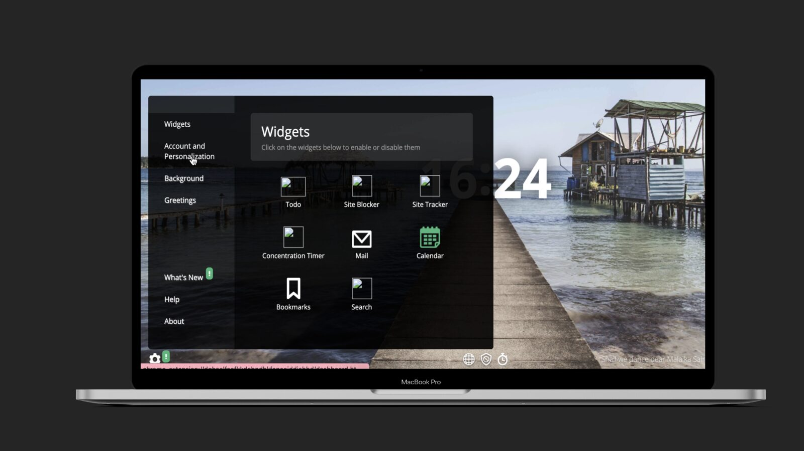
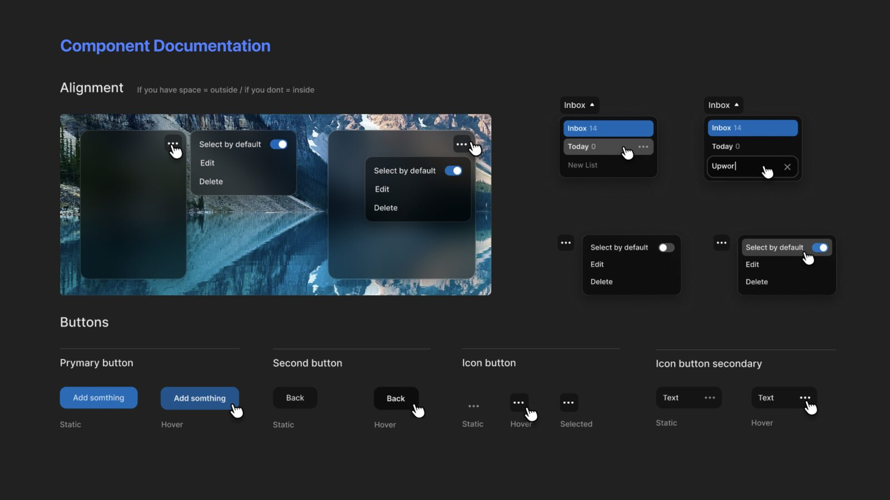
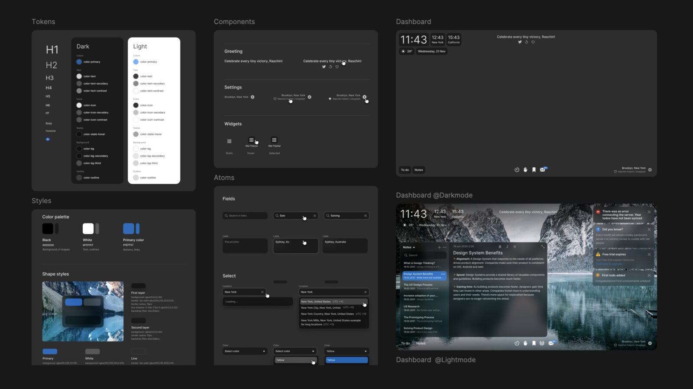

Case study
Goals
A productivity Chrome extension was losing 81.79% of its users in the first session. The founders thought it was the visual design. It was the front door.

When I came onto the project, 81.79% of people who installed the extension deleted it in the same session. 1,519 downloads had produced 254 registrations. The founders' hypothesis was that the interface looked dated.
The research said otherwise. People were not bouncing off the aesthetics, they were bouncing off being asked to register before they had seen the thing work. So the redesign fixed the entry, then made the interface something worth staying for, and left behind a component system the team could ship new features on.
The problem
The numbers that started it
1,519 downloads, 254 registrations, and 81.79% of users deleting the extension inside the first session.

Research
Mapping the drop, emotion by emotion
Walking the first session step by step - Chrome store, registration, onboarding - and recording what people said at each one. The store visit is optimistic. Registration is where it turns: "I don't want to sign up without seeing some value." Onboarding then fails to explain what the widgets are for.

The calls
Skip registration, teach the widgets, reward progress
Three changes. Drop registration until the user has felt the value, then ask with a reason - sync across devices, keep your history. Walk through the main widgets step by step instead of dropping people into a blank dashboard. Add small achievements so early wins register as wins.

Structure
Wireframes before pixels
Flows and features laid out in grey, so the argument about what appears when got settled before anything looked finished.

Before
What it looked like
Cluttered widgets, no hierarchy, and nothing telling a first-time user what to do with any of it.

After
What it became
One clear surface: the clock, the day's focus, and the widgets arranged so the useful thing is the obvious thing. Broken widgets fixed rather than restyled.

After
The widget layer
Widgets became a set rather than a pile - consistent shapes, consistent states, and room for the next feature without a redesign.

System
Built to be shipped on
The technical goal was a scalable UI system for rapid feature work. Components were built and tested in Storybook with React, and documented down to alignment, buttons and states, so a small team could add features without redrawing the basics.

Process
The exploration behind it
Rounds of layout and treatment before the direction settled.

Where it landed
The redesign moved the product from cluttered and ineffective to clean and usable, opened the door to a subscription model, and left the team a design system they could build on.
The lesson I kept: when a stakeholder tells you the problem is how it looks, check where people actually leave.